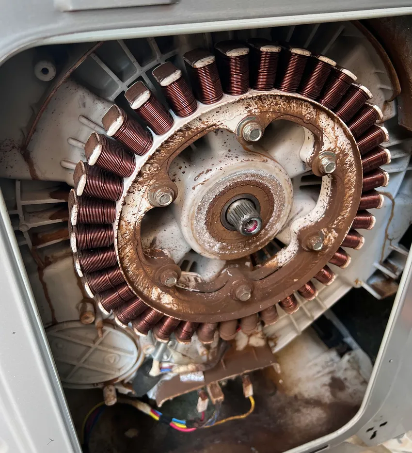
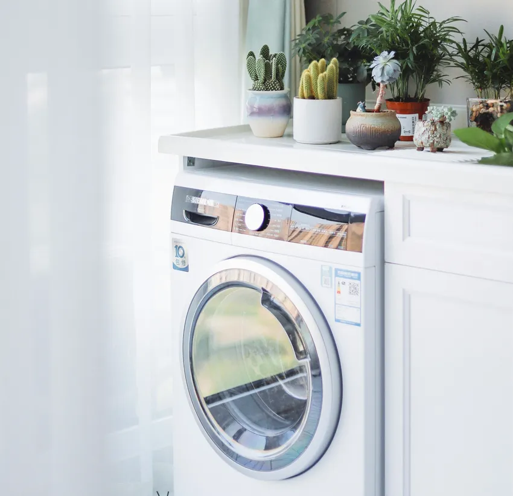

🧼 Çamaşırlarınız Yarım Kalmasın: Sertler Soğutma Tarsus Çamaşır Makinesi Servisi ile Kesintisiz Temizlik!
Modern ev yaşantısının en temel direklerinden biri olan çamaşır makineleri, hijyen ve konfor standartlarımızı belirleyen en önemli teknolojik araçlardır. Günlük hayatın koşturmacası içerisinde biriken kıyafetlerin, nevresimlerin ve tekstil ürünlerinin hızlı, güvenli ve hijyenik bir şekilde temizlenmesi, hem sağlığımız hem de zaman yönetimimiz açısından kritiktir. Ancak her elektronik cihaz gibi çamaşır makineleri de zamanla yıpranabilir, teknik arızalar verebilir veya periyodik bakım ihtiyaçları doğurabilir. Tarsus gibi hem nemli iklimiyle hem de kireçli su yapısıyla cihazların performansını zorlayan bir bölgede, güvenilir bir teknik destek almak kaçınılmazdır. İşte tam bu noktada Sertler Soğutma, bölgenin en köklü ve profesyonel Tarsus Çamaşır Makinesi Servisi olarak devreye girmekte ve evinizdeki temizlik rutinini güvence altına almaktadır.
Sertler Soğutma olarak bizler, çamaşır makinenizin sadece bir beyaz eşya değil, evinizdeki düzenin koruyucusu olduğunu biliyoruz. Cihazınızda meydana gelen en küçük bir ses değişimi, su boşaltma sorunu veya sıkma yapmama problemi, kısa sürede büyük bir iş yüküne dönüşebilir. Profesyonel ekibimizle sunduğumuz Tarsus Çamaşır Makinesi Servisi hizmeti, sadece mevcut arızayı gidermeyi değil, cihazın tüm çalışma prensiplerini optimize ederek ömrünü uzatmayı hedefler. Tarsus’un her mahallesine ulaşan geniş servis ağımız ve yılların getirdiği sektörel tecrübemizle, çamaşırlarınızın yarım kalmasına asla izin vermiyoruz. Bu makalede, çamaşır makinesi onarım süreçlerinden periyodik bakımın önemine, orijinal yedek parça kullanımından Sertler Soğutma'nın sunduğu kurumsal ayrıcalıklara kadar pek çok detayı derinlemesine inceleyeceğiz.

Tarsus Çamaşır Makinesi Servisi Uzmanlık Alanlarımız
Teknik servis hizmeti, derin bir bilgi birikimi ve sürekli güncellenen bir teknik altyapı gerektirir. Sertler Soğutma, Tarsus Çamaşır Makinesi Servisi alanında uzmanlaşırken, piyasada bulunan tüm marka ve modellerin (Arçelik, Beko, Vestel, Samsung, LG, Bosch, Siemens, Profilo ve daha fazlası) çalışma mekanizmalarına hakim bir ekip kurmuştur. Çamaşır makineleri, mekanik aksamlar (kazan, motor, amortisör), elektronik bileşenler (anakart, sensörler) ve hidrolik sistemlerin (pompa, ventil) karmaşık bir birleşimidir. Bizim uzmanlığımız, bu sistemlerin her birindeki arızayı noktasal olarak tespit edip en kalıcı çözümü üretmektir.
Sertler Soğutma'nın Tarsus Çamaşır Makinesi Servisi kapsamında sunduğu uzmanlık alanları oldukça geniştir. Kazan bilyalarının değişiminden motor kömürü yenilenmesine, kapı kilidi arızalarından su giriş ventili problemlerine kadar her türlü teknik müdahale, uluslararası standartlara uygun ekipmanlarla gerçekleştirilir. Özellikle yeni nesil dijital ve inverter motorlu makinelerin hassas yapısı, sıradan bir tamircinin değil, profesyonel bir Tarsus Çamaşır Makinesi Servisi ekibinin müdahalesini zorunlu kılar. Biz, bu teknolojileri yakından takip ederek, cihazınızın orijinalliğini bozmadan tamir süreçlerini yönetiyoruz.
Tarsus Çamaşır Makinesi Servisi İçin Doğru Adres
Bir servis firmasını "doğru adres" yapan unsurlar; güven, hız, teknik yetkinlik ve dürüstlüktür. Sertler Soğutma, Tarsus halkı için yıllardır bu kriterleri eksiksiz karşılayan bir güven limanı olmuştur. Tarsus Çamaşır Makinesi Servisi arayışına girdiğinizde karşınıza çıkan pek çok seçenek arasında neden bizi seçmelisiniz? Çünkü biz, her arızaya bir mühendis titizliğiyle ve bir komşu samimiyetiyle yaklaşıyoruz. Cihazınızı evinizden alıp günlerce bekletmek yerine, arızayı yerinde çözmeyi ve şeffaf bir süreç yürütmeyi temel prensibimiz olarak kabul ediyoruz.
Doğru adres olmak, aynı zamanda Tarsus’un yerel dinamiklerini de bilmeyi gerektirir. Bölgedeki suların kireç oranı, makinelerin rezistanslarının ve pompalarının ömrünü doğrudan etkiler. Sertler Soğutma olarak sunduğumuz Tarsus Çamaşır Makinesi Servisi hizmetinde, bu yerel faktörleri göz önünde bulundurarak özel koruyucu önlemler ve bakım tavsiyeleri sunuyoruz. Müşterilerimiz bize ulaştığında, sadece bir tamirciyle değil, cihazının tüm teknik detaylarına hakim bir uzmanla görüştüğünü bilir. Bu güven duygusu, Sertler Soğutma ismini Tarsus’ta beyaz eşya servisi denildiğinde ilk akla gelen marka haline getirmiştir.
Tarsus Çamaşır Makinesi Servisi Telefon Numarası
Acil durumlarda doğru iletişim kanalına sahip olmak, zaman kaybını ve cihazın daha fazla zarar görmesini engeller. Sertler Soğutma'ya ulaşmak ve profesyonel Tarsus Çamaşır Makinesi Servisi talebinde bulunmak için iletişim numaralarımız 7/24 aktif bir şekilde hizmet vermektedir. Telefon numaralarımız üzerinden bize ulaştığınızda, sizi sadece bir operatör değil, arıza hakkında ön teşhis yapabilecek bilgiye sahip bir müşteri temsilcisi karşılar. Bu sayede, adresinize gelecek olan Tarsus Çamaşır Makinesi Servisi ekibi, olası yedek parçaları önceden hazırlayarak çok daha hızlı bir çözüm sunabilir.
İletişim kanallarımızın bu kadar erişilebilir olması, Sertler Soğutma'nın müşteri memnuniyetine verdiği önemin bir göstergesidir. Tarsus'un en uzak mahallesinden merkezi semtlerine kadar, telefon numaramızı tuşlayan her kullanıcı için en hızlı mobil ekibimizi sevk ediyoruz. Tarsus Çamaşır Makinesi Servisi randevusu oluştururken, sizin takviminize uygun saatleri belirliyor ve söz verdiğimiz dakikada kapınızda oluyoruz. Telefon hattımız aynı zamanda teknik destek hattı olarak da hizmet vermektedir; bazen küçük bir düğme kilidi veya basit bir ayar sorunu için telefonda verdiğimiz rehberlikle sorununuzu çözmenize yardımcı oluyoruz. Çünkü bizim için öncelik, müşterilerimizin işlerinin aksamamasıdır. Telefon numaramızı rehberinize kaydetmeniz, beyaz eşya güvenliğiniz için atacağınız en önemli adımlardan biridir.
Sertler Soğutma ile Modern Servis Hizmeti
Teknoloji ilerledikçe servis hizmetlerinin de bu hıza ayak uydurması gerekir. Sertler Soğutma, modern teknik servis anlayışını Tarsus’a taşıyan öncü bir kuruluştur. Modernlikten kastımız sadece en yeni aletleri kullanmak değil; aynı zamanda dijital kayıt sistemleri, hızlı parça tedarik ağları ve profesyonel bir kurumsal duruştur. Tarsus Çamaşır Makinesi Servisi hizmetimizi yürütürken, cihazınızın tüm arıza geçmişini dijital olarak kaydediyor, böylece gelecekte oluşabilecek sorunları önceden öngörebiliyoruz.
Modern servis anlayışımızın bir diğer ayağı ise sürdürülebilirliktir. Sertler Soğutma, onarım süreçlerinde çevreye duyarlı yöntemler kullanır ve enerji tasarrufu sağlayan parça değişimlerini teşvik eder. Tarsus Çamaşır Makinesi Servisi alanında sunduğumuz bu yenilikçi yaklaşım, müşterilerimizin hem bütçesini hem de doğayı korumasına yardımcı olur. Cihazınızı tamir ederken en modern teşhis cihazlarını (diagnostic tools) kullanıyoruz; bu cihazlar makinenin elektronik kartına bağlanarak hatanın kaynağını saniyeler içinde bize gösterir. Bu sayede gereksiz parça değişimlerinin önüne geçiyor ve maliyetleri minimumda tutuyoruz.
Sertler Soğutma Donanımlı Mobil Servis Araçları
Zamanın çok kıymetli olduğu bir çağda yaşıyoruz. Sertler Soğutma, arızalara müdahale hızını artırmak amacıyla "Tam Donanımlı Mobil Servis Araçları" filosuna yatırım yapmıştır. Tarsus Çamaşır Makinesi Servisi talebiniz bize ulaştığında yola çıkan araçlarımız, sıradan bir ulaşım aracı değil, mobil bir atölye niteliğindedir. İçerisinde en yaygın kullanılan yedek parçalardan en hassas ölçüm cihazlarına kadar her türlü ekipman hazır bulunur.
Mobil servis ağımızın bu denli güçlü olması, Tarsus Çamaşır Makinesi Servisi operasyonlarımızın %95 oranında ilk ziyarette tamamlanmasını sağlar. Araçlarımızda stoklanan orijinal pompalar, amortisörler, rezistanslar ve ventil grupları sayesinde, parça beklemek için günlerce vakit kaybetmezsiniz. Sertler Soğutma teknisyenleri, bu donanımlı araçlarla adresinize ulaştığında, sorunu yerinde ve hemen çözebilecek her türlü imkana sahiptir. Tarsus’un trafik ve coğrafi koşullarına uygun olarak stratejik noktalarda bekleyen mobil ekiplerimiz, çağrınızdan kısa bir süre sonra kapınızda belirerek profesyonel desteğini sunar.
Sertler Soğutma Filtre Temizliği Hizmeti
Çamaşır makinelerinin en sık arıza yapma nedeni, kullanıcılar tarafından ihmal edilen filtre temizliğidir. Sertler Soğutma, Tarsus Çamaşır Makinesi Servisi ziyaretlerinde standart bir prosedür olarak filtre kontrolü ve temizliği hizmeti sunar. Makinenin ön alt kısmında bulunan tahliye filtresi, ceplerden çıkan bozuk paralar, düğmeler, iğneler ve çamaşır tüyleriyle zamanla dolar. Bu durum, makinenin su boşaltamamasına ve hatta pompa motorunun yanmasına neden olur.

Profesyonel filtre temizliği hizmetimiz, sadece görünen kirlerin temizlenmesi değil, filtre yuvasının ve pervanenin de detaylıca kontrol edilmesini kapsar. Sertler Soğutma teknisyenleri, Tarsus Çamaşır Makinesi Servisi sırasında size bu filtreyi nasıl güvenli bir şekilde temizleyebileceğinizi uygulamalı olarak gösterir. Filtresi düzenli temizlenmeyen bir makine, sıkma sırasında aşırı ses yapar ve çamaşırların ıslak kalmasına neden olur. Ayrıca biriken kirler kötü koku oluşumuna da sebebiyet verir. Biz, sunduğumuz bu detaylı hizmetle hem makinenizin mekanik sağlığını koruyor hem de yıkama kalitesini en üst seviyede tutuyoruz. Uzun vadede büyük masraflardan kaçınmanın yolu, bu basit ama kritik bakım adımlarından geçer.
💡 Tarsus'un kireçli su yapısı, çamaşır makinelerinin rezistans ve pompa ömrünü ciddi ölçüde kısaltır. Sertler Soğutma, bu yerel faktörü göz önünde bulundurarak her bakımda özel kireç önleyici işlemler uygular.
Tarsus Çamaşır Makinesi Arıza Çözümleri
Çamaşır makinesi arızaları genellikle "su almıyor", "suyu boşaltmıyor", "çok ses çıkarıyor" veya "kazan dönmüyor" gibi şikayetlerle kendini gösterir. Sertler Soğutma, bu ve benzeri tüm sorunlar için kesin ve kalıcı Tarsus Çamaşır Makinesi Servisi çözümleri sunar. Her arızanın arkasında birden fazla sebep olabilir. Örneğin, makine su almıyorsa bu durum sadece musluktan değil, su giriş ventilinden, anakarttan veya kapı kilidinden kaynaklanıyor olabilir. Bizim işimiz, bu olasılıklar arasından doğru olanı hızla belirlemektir.
Arıza çözümlerimizde temel yaklaşımımız, cihazın orijinal yapısını korumaktır. Sertler Soğutma, tamiri mümkün olan parçaları (özellikle pahalı elektronik kartlar gibi) en son teknoloji ekipmanlarla onararak müşterilerini yüksek değişim maliyetlerinden kurtarır. Ancak, bir parçanın ömrü dolmuşsa ve onarımı riskli ise, mutlaka orijinal yedek parça ile değişimi önerilir. Tarsus Çamaşır Makinesi Servisi operasyonlarımızda çözüm odaklılığımız, bizi bölgedeki en güvenilir teknik partner haline getirmiştir. Her onarım sonrası cihaz, tüm fonksiyonları çalışacak şekilde test edilerek teslim edilir.
Tarsus’ta Gün İçi Servis İmkanı
Çamaşır makinesi bozulduğunda işlerin ne kadar hızlı birikebileceğini biliyoruz. Bu yüzden Sertler Soğutma, Tarsus genelinde "Gün İçi Servis" imkanı sunan nadir firmalardan biridir. Sabah verdiğiniz bir Tarsus Çamaşır Makinesi Servisi siparişi, akşam olmadan çözüme kavuşturulabilir. Hızımız, kalitemizden ödün verdiğimiz anlamına gelmez; aksine, operasyonel gücümüzün ve yerel hakimiyetimizin bir kanıtıdır.
Gün içi servis imkanımız, özellikle çocuklu aileler ve yoğun çalışan bireyler için hayat kurtarıcıdır. Sertler Soğutma'nın merkezi koordinasyon birimi, gelen çağrıları en yakın müsait ekibe anlık olarak iletir. Tarsus’un yoğun trafiğinde bile optimize edilmiş rota yönetimiyle adresinize hızla ulaşıyoruz. Tarsus Çamaşır Makinesi Servisi denildiğinde bizi rakiplerimizden ayıran bu sürat, müşteri memnuniyeti anketlerimizde her zaman en yüksek puanı alan özelliğimiz olmuştur. "Yarın geliriz" sözünü değil, "Şimdi geliyoruz" kararlılığını taşıyoruz.
Kart Tamiri ve Değişim Süreçleri
Yeni nesil çamaşır makinelerinin beyni olan elektronik kartlar, voltaj dalgalanmalarına karşı oldukça hassastır. Tarsus bölgesinde zaman zaman yaşanan elektrik kesintileri veya voltaj oynamaları, makinenin beyninin (anakartın) yanmasına veya programlarının karışmasına neden olabilir. Sertler Soğutma, Tarsus Çamaşır Makinesi Servisi bünyesinde kurduğu özel elektronik laboratuvarı ile bu kartların tamirini gerçekleştirebilmektedir. Bir kartın yenisiyle değiştirilmesi oldukça maliyetli bir işlemken, uzman ekibimiz tarafından yapılan kart tamiri çok daha ekonomik bir çözümdür.
Kart tamiri ve değişim süreçlerimizde, hassas lehimleme teknikleri ve orijinal mikro bileşenler kullanılır. Sertler Soğutma teknisyenleri, kart üzerindeki arızalı entegreleri, röleleri veya kondansatörleri tespit ederek değişimi yapar ve kartı tekrar fabrikasyon ayarlarına döndürür. Eğer kart tamir edilemeyecek durumdaysa, cihazınızın seri numarasına tam uyumlu orijinal sıfır kart değişimi yapılır. Tarsus Çamaşır Makinesi Servisi hizmetimizde, her kart müdahalesi sonrası cihazın tüm yazılımsal fonksiyonları test edilir. Bu süreçte sadece donanımı değil, makinenin yazılım algoritmasını da kontrol ederek, yıkama programlarının sorunsuz çalıştığından emin oluyoruz. Dijital ekran hataları, programın yarıda kalması veya makinenin hiç açılmaması gibi durumlarda, Sertler Soğutma'nın elektronik uzmanlığı en büyük güvencenizdir.
Sertler Soğutma Teknik Altyapısı
Bir teknik servisin kalitesi, sahip olduğu teknik altyapı ile doğru orantılıdır. Sertler Soğutma, sektörel gelişmeleri yakından takip ederek makine parkurunu ve test ekipmanlarını sürekli yeniler. Tarsus Çamaşır Makinesi Servisi hizmetini verirken kullandığımız her bir tornavida bile, cihazın vidalarına zarar vermeyecek kalitededir. Profesyonel atölyemizde; kazan presleme makineleri, motor test stantları ve su basınç simülatörleri gibi pek çok teknik donanım bulunmaktadır.
Güçlü teknik altyapımız, en zorlu arızaların bile (örneğin kazan kesme ve bilya değişimi işlemleri) sıfır hata ile tamamlanmasını sağlar. Sertler Soğutma olarak teknisyenlerimize düzenli eğitimler vererek, onların bu gelişmiş altyapıyı en verimli şekilde kullanmalarını sağlıyoruz. Tarsus Çamaşır Makinesi Servisi operasyonlarımızda teknolojiye yaptığımız bu yatırım, bize hız ve güvenilirlik olarak geri dönmektedir. Biz sadece bir tamirci dükkanı değil, modern bir teknoloji çözüm merkeziyiz. Atölyemizdeki her işlem, kalite kontrol onayından geçmeden müşteriye teslim edilmez.
Sertler Soğutma Periyodik Bakım Avantajları
Pek çok kullanıcı, cihazı bozulmadan servis çağırmayı bir masraf olarak görür. Oysa periyodik bakım, en büyük tasarruf yöntemidir. Sertler Soğutma, müşterilerine sunduğu periyodik bakım paketleriyle cihazların ömrünü ortalama %40 oranında artırmaktadır. Tarsus Çamaşır Makinesi Servisi kapsamında sunduğumuz bakım hizmeti; rezistans kireç temizliği, amortisör kontrolü, körük lastiği hijyeni, pompa temizliği ve genel performans testlerini içerir.
Bakımın avantajları saymakla bitmez. Düzenli bakımı yapılan bir makine, daha az elektrik ve su harcar. Kireçten arındırılmış bir rezistans, suyu çok daha hızlı ısıtır. Amortisörleri kontrol edilmiş bir makine, sıkma sırasında sarsıntı yapmayarak evdeki huzuru bozmaz ve kazan miline zarar vermez. Sertler Soğutma olarak, Tarsus'un kireçli sularına karşı özel solüsyonlarla yaptığımız temizlik işlemleri, makinenizin iç organlarını ilk günkü gibi tertemiz yapar. Tarsus Çamaşır Makinesi Servisi aboneliği olan müşterilerimiz, ani arıza risklerini minimize ederek uzun vadede çok daha karlı çıkmaktadır. Küçük bir bakım maliyeti, yarın karşınıza çıkacak büyük bir motor veya kazan arıza maliyetini bugün engeller.
Sertler Soğutma Garanti Kapsamı Detayları
Yapılan işe güvenmenin en somut göstergesi, o işe verilen garantidir. Sertler Soğutma, gerçekleştirdiği tüm onarımlarda ve değiştirdiği tüm parçalarda kurumsal garanti sunar. Tarsus Çamaşır Makinesi Servisi hizmetimizden faydalanan her müşterimize, yapılan işlemi, değişen parçayı ve garanti süresini içeren resmi bir servis formu teslim edilir. Bu form, sizin yasal güvencenizdir.
Garanti kapsamımız detaylı ve şeffaftır. Değiştirilen bir pompa veya motor, belirtilen süre (genellikle 1 yıl) içerisinde aynı arızayı tekrarlarsa, Sertler Soğutma bu sorunu tamamen ücretsiz olarak giderir. Garanti süreci sadece parça ile sınırlı kalmaz; sunduğumuz işçilik kalitesi de güvencemiz altındadır. Tarsus halkının bize duyduğu güvenin temelinde, "sözümüzün arkasında durma" prensibimiz yatmaktadır. Tarsus Çamaşır Makinesi Servisi hizmeti alırken, karşınıza muhatap bulabileceğiniz, kurumsal bir yapı ile çalışmanın rahatlığını yaşarsınız. Bizim için her onarım, uzun vadeli bir dostluğun ve güven ilişkisinin başlangıcıdır. Müşteri memnuniyeti odaklı garanti politikamız sayesinde, gözünüz arkada kalmadan cihazınızı bize teslim edebilirsiniz.
Hemen Randevu Alın
Çamaşır makinenizin markasını ve arıza belirtisini söyleyin; en yakın ekibimizi anında yönlendirelim. Aynı gün servis garantisi.
Hemen İletişime Geçin
Çamaşır makineniz arızalandıysa ya da periyodik bakım yaptırmak istiyorsanız, Sertler Soğutma uzmanları bir telefon uzağınızda. Garantili tamir, sürpriz fatura yok.
Sıkça Sorulan Sorular
Sertler Soğutma, Tarsus bölgesinde yaygın olarak kullanılan Arçelik, Beko, Vestel, Bosch, Siemens, Samsung, LG, Profilo, Altus, Regal gibi tüm yerli ve yabancı markaların özel servis hizmetini vermektedir. Her marka için orijinal yedek parça stoğumuz mevcuttur.
Bize web sitemizdeki iletişim numaralarından veya WhatsApp hattımızdan ulaşabilirsiniz. Müşteri temsilcilerimiz size en uygun zaman dilimi için randevu oluşturacak ve ekiplerimizi yönlendirecektir.
Bu durum genellikle amortisörlerin özelliğini kaybetmesinden, makinenin dengesiz durmasından veya kazan bilyalarının (rulmanların) aşınmasından kaynaklanır. Sertler Soğutma uzman ekibi yerinde inceleme yaparak sorunun kaynağını belirleyebilir.
Öncelikle makinenin ön alt kısmındaki tahliye filtresini açıp temizlemeyi deneyin. Eğer filtre temiz olmasına rağmen sorun devam ediyorsa, pompa motoru arızalanmış veya gider hortumu tıkanmış olabilir. Bu durumda profesyonel bir Tarsus Çamaşır Makinesi Servisi desteği almanız gerekir.
Servis ücretlerimiz yapılan işlemin türüne, değişecek parçanın maliyetine ve işçilik detaylarına göre değişmektedir. Ancak Sertler Soğutma olarak her zaman piyasa koşullarına uygun, şeffaf ve ekonomik bir fiyatlandırma politikası izliyoruz. Kesin rakam bilgisi arıza tespiti sonrası sunulur.
Evet, Sertler Soğutma olarak cihazınızın sağlığı ve uzun ömürlü olması için sadece fabrikasyon orijinal yedek parçalar kullanıyoruz. Kullandığımız tüm parçalar garanti kapsamımızdadır.
Tarsus'un su yapısı nedeniyle, makinelerin yılda en az bir kez profesyonel periyodik bakımdan geçmesini öneriyoruz. Bu bakım, enerji tasarrufu sağlar ve büyük arızaları önler.
Kötü koku genellikle düşük ısıda yıkama yapılması, aşırı deterjan kullanımı ve kazan içerisinde biriken bakteriler nedeniyle oluşur. Sertler Soğutma'nın profesyonel kazan temizleme hizmeti ile bu sorundan kalıcı olarak kurtulabilirsiniz.
Arızaların büyük çoğunluğu yerinde ve aynı gün içerisinde çözülür. Eğer parça temini veya atölye çalışması gerekirse, teknisyenlerimiz size net bir teslimat süresi bildirecektir.
Onarım sırasında değiştirilen tüm yedek parçalar ve ilgili işçilik, servis formunda belirtilen süre boyunca garantimiz altındadır. Bu süre içinde parça kaynaklı bir sorun yaşarsanız ücretsiz değişim yapılır.
Sertler Soğutma, Tarsus'un her köşesine profesyonel dokunuşlar yaparak hayatınızı kolaylaştırmaya devam ediyor. Çamaşır makinenizdeki her türlü sorunda, güvenilir, hızlı ve kaliteli bir Tarsus Çamaşır Makinesi Servisi arıyorsanız biz buradayız. Temiz kıyafetler, mutlu evler için Sertler Soğutma'yı tercih edin, konforunuzu profesyonellere emanet edin!